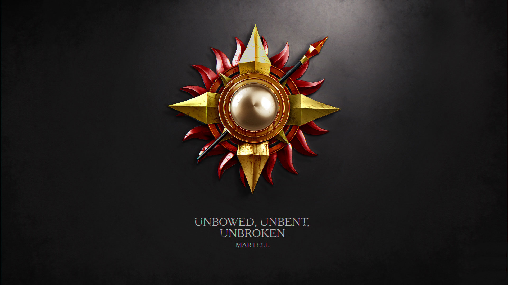

House Martell
"Unbowed, Unbent, Unbroken"
House Martell rules from Dorne, a city in the far south of the continent from their castle named Sunspear. Dorne is a arid, humid desert that few houses could withstand let alone reside in, but House Martell has lived there successfully for hundreds of years.
House Martell is the only great house that remains unconquered by any and all invaders, including the Targaryen invaders, earning them the house motto: “Unbowed, Unbent, Unbroken”. Over a thousand years ago when Mors Martell fell in love with the warrior-queen Nymeria, they created a marriage alliance. With their combined armies, they conquered and unified the rest of Dorne. House Martell has ruled ever since.
